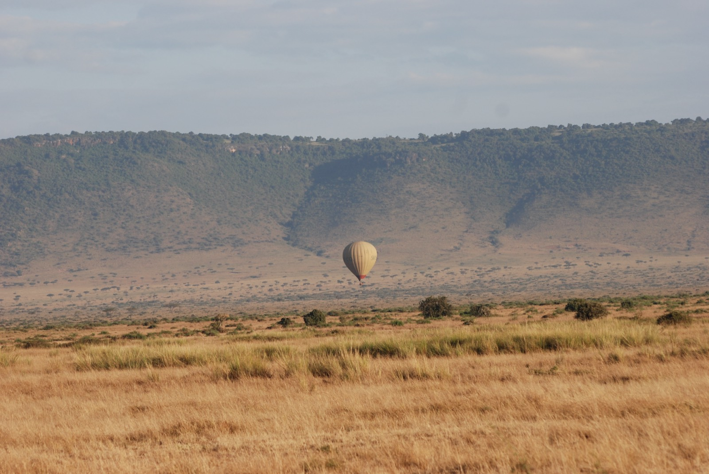
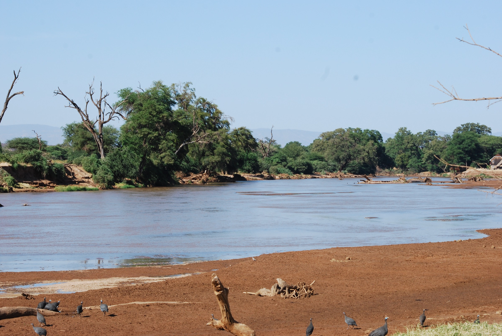
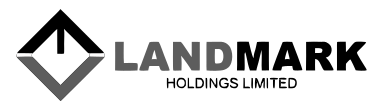
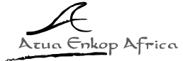
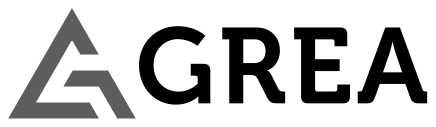
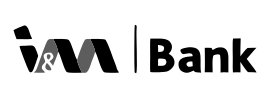
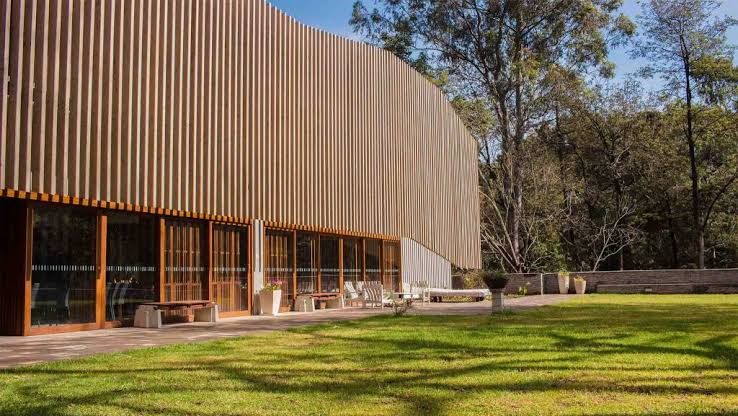
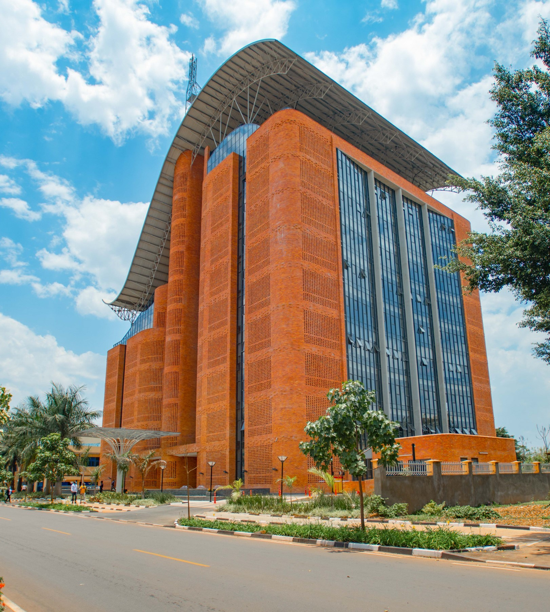

Off-the-Grid Building & Infrastructure
LEED, IFC EDGE & ISO strategy for buildings and site infrastructure that run themselves in remote conditions.

We help design and run self-sustaining infrastructure in Africa's most remote environments and take you to see it in action.






LEED, IFC EDGE & ISO strategy for buildings and site infrastructure that run themselves in remote conditions.

Travelife and Green Key certification pathways for lodges and operators: audited, then experienced.

Operational audits and community-rooted impact programs for NGOs and businesses in complex environments.
"Greenkey didn't just certify our lodge. They helped us run it off-grid, and brought our first guests to see the system working."
Request a baseline audit, or plan a visit to see our work in the field.